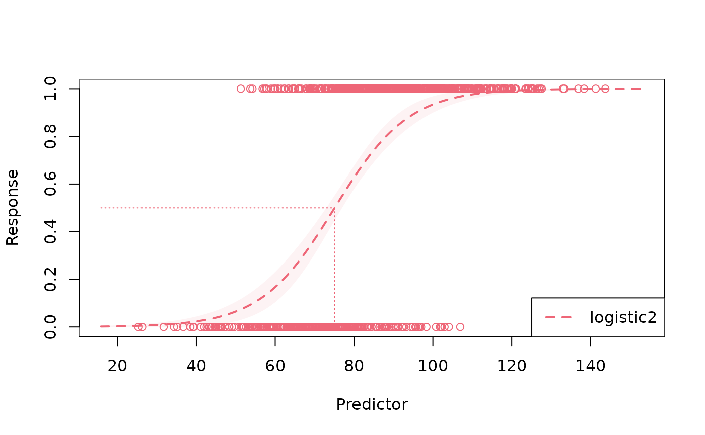
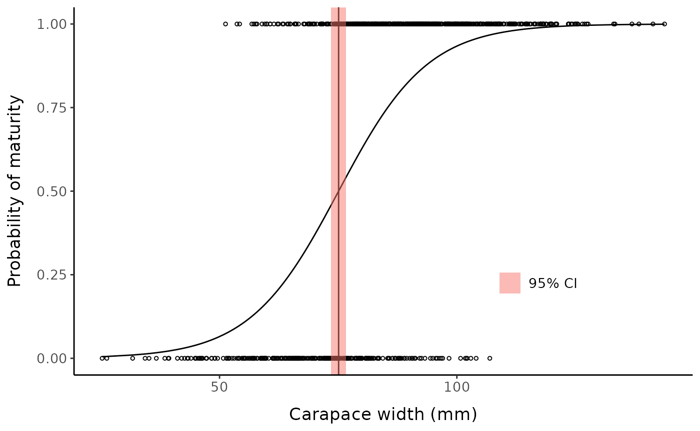

#> [[1]]
#> [1] TRUE
#>
#> [[2]]
#> [1] TRUE
#>
#> [[3]]
#> [1] TRUE
#>
#> [[4]]
#> [1] TRUE
#>
#> [[5]]
#> [1] TRUE
#>
#> [[6]]
#> [1] TRUE
#>
#> [[7]]
#> [1] TRUE
#>
#> [[8]]
#> [1] TRUE
#>
#> [[9]]
#> [1] TRUE
#>
#> [[10]]
#> [1] TRUE
set.seed(12) # set seed for reproducibility
fc <- fake_crustaceans(
error_scale = 17,
slope = 9,
L50 = 75, # known size at maturity is 75 mm
n = 800, # sample size
allo_params = c(0.9, 0.25, 1.05, 0.2),
x_mean = 85 # mean carapace width of the sample
)
clust_dat <- cbind(fc$x, fc$y)
mclust_class <- mclust::Mclust(data = clust_dat,
G = 2,
modelNames = "EVV")
fc_mclust <- fc %>%
rename(true_maturity = mature) %>%
mutate(pred_maturity = mclust_class$classification)
mature_label <- slice_max(fc_mclust, x) %>% pull(pred_maturity)
fc_mclust <- fc_mclust %>%
mutate(
pred_maturity = if_else(pred_maturity == mature_label,
as.factor(1),
as.factor(0)),
pred_maturity_num = if_else(pred_maturity == 1,
as.numeric(1),
as.numeric(0))) %>%
mutate(uncertainty = mclust_class$uncertainty)Post-classification logistic regression options
Beyond the familiar stats::glm, there are many packages
that can be used to model the relationship between size and maturity
status, allowing for the incorporation of random effects, temporal or
spatial structuring, and other additional complexities. These include
popular packages for fitting generalized linear mixed models (GLMMs) and
generalized additive (mixed) models (GAMMs) such as lmer,
nlme, mgcv, glmmTMB, and
sdmTMB. While logit links are the most common for binomial
models like these, testing alternative link functions—particularly the
probit and complementary log-log (“cloglog”) links—may be important for
ensuring reliable parameter estimates (Mainguy et al. 2024). Also see Roa et
al. (1999).
Helpful vignette: https://cran.r-project.org/web/packages/qra/vignettes/timeMortality.html
Methods to obtain confidence intervals for SM50 value
confint_L.R script from Mainguy et al. (2024): Delta method, Fieller method, profile-likelihood, non-parametric bootstrapping, parametric bootstrapping, Monte Carlo, Bayesian
R package qra: Fieller method, Delta method (Maindonald 2021)
R package drc (Ritz et al. 2015): Delta method. This package can also fit 5/4/3/2-parameter logistic, log-logistic, Weibull, etc. models, incorporate weights, robust nls fitting, constrained optimization, and other customization options. It also contains functions to simulate data
4: R package DRDA (Malyutina, Tang, and Pessia 2023)
Other functions that could be used (that I have not tested) include
twopartm::FiellerRatio() and
tidydelta::tidydelta().
Standard stats::glm
example_glm <- glm(data = fc_mclust,
pred_maturity_num ~ x,
family = binomial(link = "logit"))
broom::tidy(example_glm, conf.int = TRUE)
#> # A tibble: 2 × 7
#> term estimate std.error statistic p.value conf.low conf.high
#> <chr> <dbl> <dbl> <dbl> <dbl> <dbl> <dbl>
#> 1 (Intercept) -7.76 0.615 -12.6 1.54e-36 -9.01 -6.60
#> 2 x 0.104 0.00772 13.4 4.63e-41 0.0891 0.119
broom::glance(example_glm) %>%
dplyr::select(-c(null.deviance, df.null)) %>%
mutate(across(where(is.double), ~ round(.x, digits = 2)))
#> # A tibble: 1 × 6
#> logLik AIC BIC deviance df.residual nobs
#> <dbl> <dbl> <dbl> <dbl> <int> <int>
#> 1 -352. 708. 718. 704. 798 800drc package
testdrm <- drc::drm(pred_maturity_num ~ x,
data = fc_mclust,
fct = LL.2(),
type = "binomial")
testdrm
#>
#> A 'drc' model.
#>
#> Call:
#> drc::drm(formula = pred_maturity_num ~ x, data = fc_mclust, fct = LL.2(), type = "binomial")
#>
#> Coefficients:
#> b:(Intercept) e:(Intercept)
#> -7.996 74.001
summary(testdrm)
#>
#> Model fitted: Log-logistic (ED50 as parameter) with lower limit at 0 and upper limit at 1 (2 parms)
#>
#> Parameter estimates:
#>
#> Estimate Std. Error t-value p-value
#> b:(Intercept) -7.99575 0.59870 -13.355 < 2.2e-16 ***
#> e:(Intercept) 74.00087 0.93113 79.475 < 2.2e-16 ***
#> ---
#> Signif. codes: 0 '***' 0.001 '**' 0.01 '*' 0.05 '.' 0.1 ' ' 1
confint(testdrm, "e")
#> 2.5 % 97.5 %
#> e:(Intercept) 72.1759 75.82584
estfun.drc <- drc::estfun.drc
bread.drc <- drc::bread.drc
# use lmtest and sandwich packages to obtain robust standard errors
lmtest::coeftest(testdrm, vcov = sandwich)
#>
#> t test of coefficients:
#>
#> Estimate Std. Error t value Pr(>|t|)
#> b:(Intercept) -7.99575 0.60852 -13.140 < 2.2e-16 ***
#> e:(Intercept) 74.00087 0.96722 76.508 < 2.2e-16 ***
#> ---
#> Signif. codes: 0 '***' 0.001 '**' 0.01 '*' 0.05 '.' 0.1 ' ' 1
drc::ED(testdrm, c(50), "delta")
#>
#> Estimated effective doses
#>
#> Estimate Std. Error Lower Upper
#> e:1:50 74.00087 0.93113 72.17590 75.82584
plot(testdrm) # built-in plotting methodCustom plot example:
sm50_est <- coef(testdrm)[2]
low_ci <- confint(testdrm, "e")[1]
hi_ci <- confint(testdrm, "e")[2]
ggplot() +
geom_point(aes(x = fc_mclust$x, y = fc_mclust$pred_maturity_num),
shape = 1, size = 1) +
geom_line(aes(x = fc_mclust$x, y = predict(testdrm))) +
geom_vline(xintercept = sm50_est) +
geom_rect(aes(xmin = low_ci, xmax = hi_ci,
ymin = -Inf, ymax = Inf, fill = "95% CI"), alpha = 0.5) +
labs(y = "Probability of maturity", x = "Carapace width (mm)", fill = NULL) +
mytheme +
theme(legend.position = "inside", legend.position.inside = c(0.75, 0.25))qra package
See qra::fieller() for details of usage and outputs.
qra::fieller(
0.5,
b = coef(example_glm),
vv = vcov(example_glm),
type = "Fieller"
)
#> est var lwr upr g
#> 74.8902398 0.8919419 72.9346488 76.6805775 0.0213313
qra::fieller(
0.5,
b = coef(example_glm),
vv = vcov(example_glm),
type = "Delta" # probably OK because of low g value
)
#> est var lwr upr g
#> 74.8902398 0.8919419 73.0391634 76.7413162 0.0000000Custom plot example:
qra_est <- qra::fieller(
0.5,
b = coef(example_glm),
vv = vcov(example_glm),
type = "Fieller"
)
sm50_est <- qra_est[1]
low_ci <- qra_est[3]
hi_ci <- qra_est[4]
ggplot() +
geom_point(aes(x = fc_mclust$x, y = fc_mclust$pred_maturity_num),
shape = 1, size = 1) +
geom_line(aes(x = fc_mclust$x, y = predict(example_glm, type = "response"))) +
geom_vline(xintercept = sm50_est) +
geom_rect(aes(xmin = low_ci, xmax = hi_ci,
ymin = -Inf, ymax = Inf, fill = "95% CI"), alpha = 0.5) +
labs(y = "Probability of maturity", x = "Carapace width (mm)", fill = NULL) +
mytheme +
theme(legend.position = "inside", legend.position.inside = c(0.75, 0.25))
DRDA package
fit_l2 <- drda(pred_maturity_num ~ x,
data = fc_mclust,
mean_function = "logistic2")
fit_l4 <- drda(pred_maturity_num ~ x,
data = fc_mclust,
mean_function = "logistic4")
anova(fit_l2, fit_l4)
#> Analysis of Deviance Table
#>
#> Model 1: a
#> Model 2: 1 / (1 + exp(-e * (x - p)))
#> Model 3: a + d / (1 + exp(-e * (x - p)))
#> Model 4: a + d / (1 + n * exp(-e * (x - p)))^(1 / n) (Full)
#>
#> Model 2 is the best model according to the Akaike Information Criterion.
#>
#> Resid. Df Resid. Dev Df AIC BIC Deviance LRT Pr(>Chi)
#> Model 1 799 184.04 1098.73 1108.10
#> Model 2 798 114.59 1 721.74 735.79 -69.443 378.99 <2e-16 ***
#> Model 3 796 114.50 2 725.11 748.53 -0.091 0.63 0.7290
#> Model 4 795 114.39 1 726.33 754.44 -0.111 0.78 0.3783
#> ---
#> Signif. codes: 0 '***' 0.001 '**' 0.01 '*' 0.05 '.' 0.1 ' ' 1
anova(fit_l2)
#> Analysis of Deviance Table
#>
#> Model 1: a
#> Model 2: 1 / (1 + exp(-e * (x - p))) (Fit)
#> Model 3: a + d / (1 + n * exp(-e * (x - p)))^(1 / n) (Full)
#>
#> Model 2 is the best model according to the Akaike Information Criterion.
#>
#> Resid. Df Resid. Dev Df AIC BIC Deviance LRT Pr(>Chi)
#> Model 1 799 184.04 1 1098.73 1108.10
#> Model 2 798 114.59 2 721.74 735.79 -69.443 378.99 <2e-16 ***
#> Model 3 795 114.39 5 726.33 754.44 -0.202 1.41 0.7036
#> ---
#> Signif. codes: 0 '***' 0.001 '**' 0.01 '*' 0.05 '.' 0.1 ' ' 1
summary(fit_l2)
#>
#> Call: drda(formula = pred_maturity_num ~ x, data = fc_mclust, mean_function = "logistic2")
#>
#> Pearson Residuals:
#> Min 1Q Median 3Q Max
#> -2.5524 -0.5319 0.1131 0.5676 2.4444
#>
#> Parameters:
#> Estimate Std. Error Lower .95 Upper .95
#> Minimum 0.0000 NA NA NA
#> Height 1.0000 NA NA NA
#> Growth rate 0.1063 0.009468 0.0877 0.125
#> Midpoint at 75.0850 0.802979 73.5112 76.659
#> Residual std err. 0.3790 0.009492 0.3603 0.398
#>
#> Residual standard error on 798 degrees of freedom
#>
#> Log-likelihood: -357.87
#> AIC: 721.74
#> BIC: 735.79
#>
#> Optimization algorithm converged in 291 iterations
plot(fit_l2) # built-in plotting methodCustom plot example:
sum_l2 <- summary(fit_l2)[["param"]][4,]
sm50_est <- sum_l2[1]
low_ci <- sum_l2[3]
hi_ci <- sum_l2[4]
ggplot() +
geom_point(aes(x = fc_mclust$x, y = fc_mclust$pred_maturity_num),
shape = 1, size = 1) +
geom_line(aes(x = fc_mclust$x, y = predict(fit_l2))) +
geom_vline(xintercept = sm50_est) +
geom_rect(aes(xmin = low_ci, xmax = hi_ci,
ymin = -Inf, ymax = Inf, fill = "95% CI"), alpha = 0.5) +
labs(y = "Probability of maturity", x = "Carapace width (mm)", fill = NULL) +
mytheme +
theme(legend.position = "inside", legend.position.inside = c(0.75, 0.25))